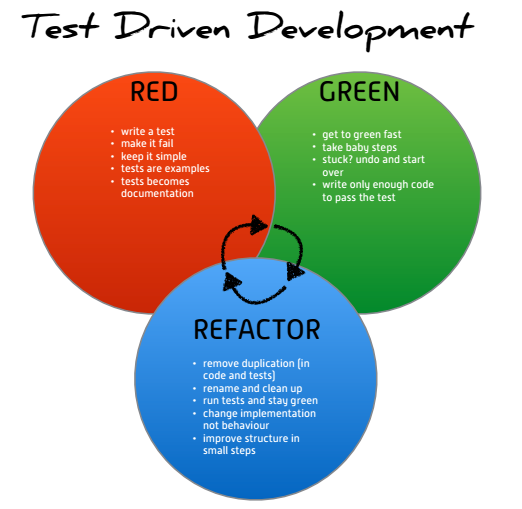

Test Driven Development in PLSQL with utPLSQL v3 - intro
The biggest challenge around unit testing is to make it work for you (as an engineer), not against you.
Many developers struggle, when writing unit tests. This is mainly due to the fact that while we are educated in design and implementation of database software, we are not mentored on unit testing. The struggle leads to dissatisfaction, frustration, poor test quality and lack of confidence in values of unit testing as a practice. Common statements and questions raised in regards to unit testing are:
- unit tests don't bring any value
- unit testing is too time consuming / too hard
- the functionality is too complex to be unit tested
- why should I write unit tests, my code already works as expected
All of the above statements and questions are often valid and definitely should not left unattended.
Why should I write unit tests¶
The fact that code already works does not make unit testing pointless. It is just harder to see the value of tests.
Unit tests should be written as an example use cases of your code. Written that way, unit tests become a living documentation for your code. Tests that are documenting code are eventually becoming the ultimate resource of knowledge about "how the code works". The main difference between unit tests and static documentation for the code is that tests are executable. Therefore you can actually validate that every example use case, described by tests is still working. Well written unit tests become both documentation and safety-harness for your code. When a change needs to be done, you can simply go and make a change to the code. Unit tests, when executed will validate that all of the existing functionality still works. The biggest value of unit test is its ability to fail. A failing test is allows us to see that something got broken due to a change in the code and therefore the code needs to be fixed.
Tests don't make sense and bring no value¶
This is one of more challenging and vague statements. So here are few reasons why tests could make no sense and bring no value:
- tests have vague names or names unrelated to tested functionality
- tests are testing more than one use case, one scenario (issue of one test to cover it all)
- tests are duplicating the tested code logic
- tests have complex logic and are unreadable
- tests are executed occasionally or not executed at all
- tests are failing for a long time and no-one is maintaining them
- tests are slow and cannot be executed on demand but rather scheduled nightly/weekly
Unit testing is too time consuming¶
Consider time needed to write a test once and compare it with the time need to thoroughly test the functionality manually each time you change anything. Unit testing is an investment. It will start paying of very quickly if you get it right. If you're able to execute your tests on demand and find out that your system is still fully operational after every change If you consider unit testing a waste of time, you're probably missing the big picture. Here is the thing that is not taken into consideration when raising such claims. Unit testing is an engineering practice. As with any engineering practice, it takes time and learning to gain experience and to master it. Writing good unit tests can be hard. It is similar to performing thorough analysis, making solid design and writing good documentation all in one. Just because it's hard it doesn't mean you should give up on it. You should consider this an initial investment, that will significantly pay-off in the long run and allowing you to accelerate your delivery by providing an automated safety harness for your code. Engineers that are just starting with unit testing can get easily discouraged, as they try to invent their own practices around unit testing. There is already tons of materials available on the internet around unit testing and Test Driven Development. Though most of them are not referring PLSQL or Databases, they are still of incredible value as most of the learning required is about universal engineering practices and patterns that apply to unit testing. Regardless of language or framework you're using many of them will be applicable. Unit testing pays-off because:
- you invest in re-runnable, reusable code for automated testing
- you invest in implementation and maintenance of tests - execution is for free
- it pays off every time you execute the suite of automated tests
- as your project grows, the benefits grow as well as time needed to regress your project is constantly small
The functionality is too complex to be unit-tested¶
This claim raises my immediate question. How can you maintain and safely modify functionality that is so complex? The trouble is that we often are tempted to make our code do too much. This is mainly because PL/SQL and even more SQL are such powerful languages. Oracle will execute a 20+ table join SQL query that is 5k lines long without any issues. The challenge comes whenever you need to change one thing in that query and you don't know if everything else will still work. So the answer is, split the code into smaller, testable pieces. Separate responsibilities and functionalities so that every module and subprogram can be unit tested and therefore be easy and safe to change.
Test Driven Development¶
This software development practice, allows engineers to switch focus and think about software in terms of business requirements that it satisfies. In the end we're providing solutions that satisfy customer needs. Test driven development is a razor-blade focused engineering practice. It's simple and very concrete. The whole TDD is a repeated cycle of:
- take one requirement and write a test for it
- see the test fail
- implement the tested functionality
- see the test pass
- clean-up the unit tested code and unit test
- once done, take another requirement...
The below image perfectly summarizes the three phases of Test Driven Development.

In my further posts I'll dive into practical aspects of Unit Testing with utPLSQL v3.